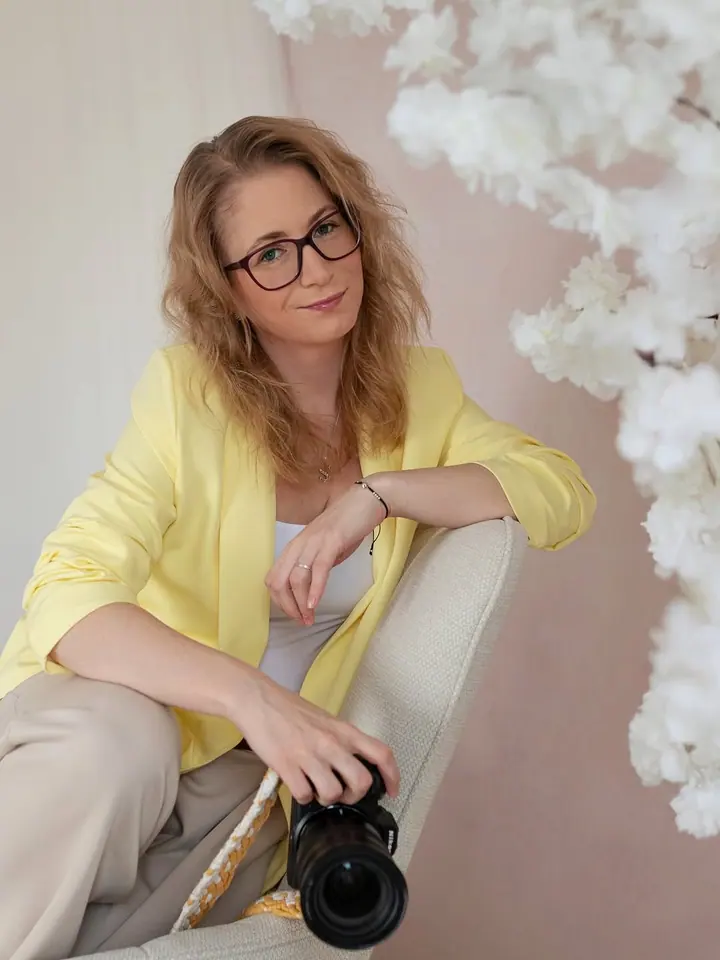

Miminka
Newborn focení probíhá v ateliéru v Rosicích u Brna, ideálně mezi 7. a 11. dnem života. Wrapy, košíky i oblečky mám připravené.

Jmenuji se Simona Kudličková a jsem fotografka i vizážistka. Fotím rodiny, těhotenství, miminka a svatby. U vybraných balíčků se postarám i o vaše líčení a účes, takže n…
Rezervovat termínFotografii se věnuji už více než 15 let a jsem vděčná, že se z mého koníčku postupně stala práce, kterou opravdu miluji. Zaměřuji se hlavně na rodinné, těhotenské, newborn a svatební focení.

Jsem také vizážistka, a tak vám u vybraných balíčků nabízím líčení, o které se postarám osobně. Na svatbě si mě můžete objednat jako fotografku i vizážistku v jednom, nebo jen na svatební líčení.
Při focení se snažím navodit příjemnou a přátelskou atmosféru, abyste byli na fotkách co nejpřirozenější. Mám ráda jemnost a nadčasový styl, a proto fotky upravuji citlivě, abyste na nich byli krásní a pořád sami sebou.
Co fotím
Newborn focení probíhá v ateliéru v Rosicích u Brna, ideálně mezi 7. a 11. dnem života. Wrapy, košíky i oblečky mám připravené.
Rodinné a těhotenské focení venku nebo tam, kde se cítíte nejlíp. Místo naplánujeme spolu a nové tipy ráda uvítám.
Nemusíte být modelka, každá z nás je krásná. Fotím venku, v ateliéru i u vás doma a ráda vám připravím foto make-up a účes.
Do svatby se snažím nenápadně zapadnout a přitom být stále nablízku. V balíčku 3v1 se postarám o make-up, účes i fotky a kdyby ukápla slzička, líčení hned opravím.
Postup
Pošlete mi datum, místo a představu o focení. U svatby připište, jestli chcete kompletní balíček s vizáží, nebo třeba jen obřad.
Před svatbou doporučuji předsvatební focení, kde se poznáme a probereme harmonogram. U balíčku 3v1 vám ráda nabídnu i zkoušku líčení a účesu.
Postarám se o make-up a účes a pak už si focení v klidu užijeme. Snažím se, aby byla atmosféra příjemná a vy jste se cítili přirozeně.
Fotky citlivě upravím a upravené vám pošlu elektronickou poštou. Na přání zajistím i tisk nebo fotoknihu.
Otázky
Miminka se fotí ve spánku a ideální věk je mezi 7. a 11. dnem života, nejpozději do 14 dnů od porodu. Obecně platí, že čím dříve, tím lépe.
Wrapy, košíky a oblečky pro miminko mám v ateliéru v Rosicích u Brna. Vám stačí nachystat například světlé oblečení na společné fotky.
Make-up, účes a profesionální focení v jednom. Součástí přípravy je zkouška líčení a účesu a během dne vám vše opravím, kdyby bylo potřeba. Svatební focení začíná od 10 500 Kč.
Balíček NORMAL stojí 5 700 Kč (45 minut, 20 upravených fotek), balíček MAXI 7 000 Kč (60 minut, neomezený počet upravených fotek). Další fotky nad rámec balíčku jsou za 250 Kč za kus.
Ano, z Velkých Opatovic počítám 10 Kč/km tam i zpět. Pokud máte svatbu na druhém konci republiky, napište mi a domluvíme se individuálně.